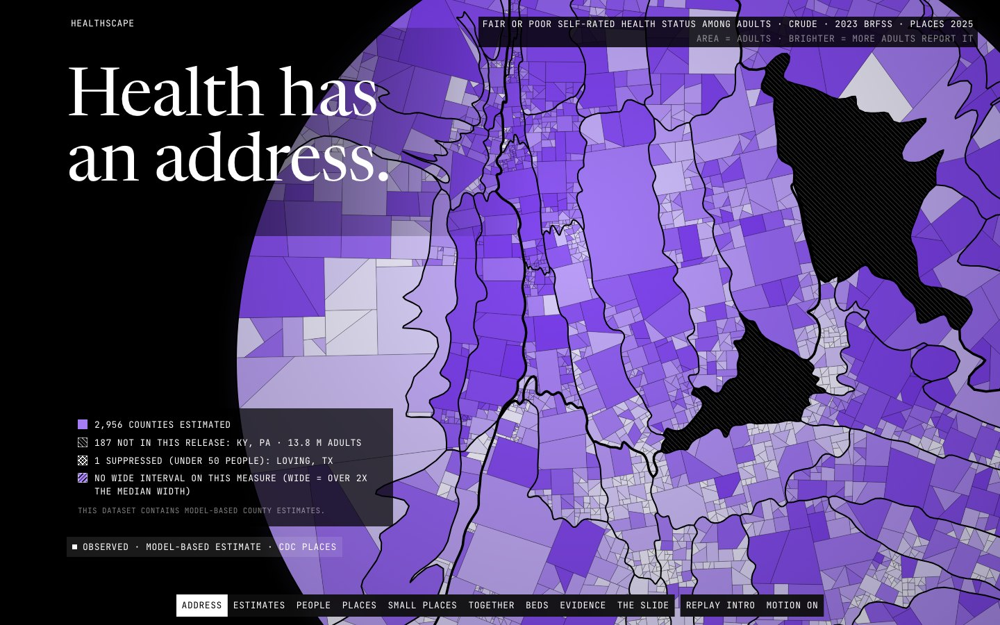

Data story · Python pipeline · Small-area estimates · 2026-10
Health Has an Address
CDC PLACES model-based health estimates for 3,144 US counties drawn as one disc of light where each county's area is its adults, with the 187 counties missing from the release left dark and hatched, and a queue model you can push until it breaks.

Sources: CDC PLACES 2025 release (public domain), US Census Bureau Population Estimates Program 2025, CMS Provider of Services Q2 2026 and CDC NHSN, transformed and aggregated here. PLACES values are model-based small-area estimates, not counts. The queue is SIMULATED, a teaching model that gives no individual advice. Nothing here is medical advice, and no endorsement by any source is implied.
01 — The problem
A county's health number is an estimate from a survey and a statistical model, not a count, and a map hides two things: how many people live in each place and which places have no number at all. A familiar county map makes empty Western counties loom large and the dense places that hold most adults vanish.
The questions: what does the national picture look like when each county is drawn as big as its adults, which counties have no published estimate and how many people do they hold, and how far can a queue model be pushed before the last beds fill all at once?
02 — What I built
An offline data layer and a static site joined by a contract.
- Data: 40 PLACES measures for 3,144 counties, reconciled with Census population, CMS hospital beds and NHSN occupancy, with every dropped row counted; empirical-Bayes smoothing published beside the raw value; two exact tessellations of the unit disc (equal area per county, and area proportional to adults).
- Site: the Tissue, one lit disc of 3,144 cells; a measure relight, a weight change between PEOPLE and PLACES, a crude to age-adjusted cut, raw against smoothed, an agreement view of measure pairs, a beds-per-1,000 surface, the Ward queue, and a free-exploration SLIDE with a county inspector.
- Three kinds of absence look different and are never filled: not in this release, suppressed, and wide interval.
03 — How it was built
- 01
Count what is missing before drawing anything
2,956 counties have a 2023 estimate for fair or poor health; 187 (every county in Kentucky and Pennsylvania, 13.8 M adults) are not in the release, and Loving County, TX (43 people) is suppressed. They are drawn dark and hatched, and the source does not say why.
- 02
Give every adult the same area
The PEOPLE layout is a diffusion cartogram of the unit disc: area follows adults (262,083,034 in total), key cells within 1% of their share. The PLACES layout gives every county the same area. Switching between them is a cross-fade of two exact tilings, never a tween of data.
- 03
Keep the two percents apart
Crude counts people and age-adjusted compares places, so they are never on screen together, and age-adjusted is disabled where area means people. On the age-adjusted view, 303 counties change rank most (138 down, 165 up).
- 04
Smooth small places, beside the raw value
An empirical-Bayes layer pulls small counties toward their state. It is a second smoothing of an already model-based estimate, so it is drawn in a separate aqua ramp, labelled DERIVED, and the inspector shows raw and smoothed side by side. Shrinkage moves a county by up to 21.6 points.
- 05
Show the queue break, and say it is a model
The Ward is an Erlang-C queue for one pooled unit of beds. It reproduces the Python vectors to 1e-9, reports an unstable queue once occupancy times surge reaches one, and carries the statement that it is about systems, not people.
04 — Results
Data. 2,956 of 3,144 counties estimated; median fair-or-poor health 21.3% (11.0 to 42.7%); 146 counties hold half of all adults; 685 counties have no active hospital; 1,105,190 certified beds in 6,689 hospitals. Across measures the strongest county-level rank correlation is 0.98, and the site states that none of it is causal.
Verified. The browser's Spearman correlation and concordance counts equal the published values for all six featured pairs, and the ledger counts equal the artifacts for all 40 measures in both types.
Measured on the live site. Lighthouse x3 against the public URL: mobile performance 0.99 to 1.00, LCP 1.35 to 1.72 s, CLS under 0.01, accessibility 1.00; desktop performance 0.99 to 1.00, LCP 0.34 to 0.58 s. At 1440 and 390 wide: 25 requests, 0 failed, 0 console errors, 0 external hosts. Tests: pytest 51, Vitest 63, Playwright 19 (whole-document collision walk and text floor at six sizes, pixel contrast, axe in motion and reduced motion). A first deploy scored mobile 0.58 to 0.74 with 1.5 to 4.4 s of blocking time; caching the cell geometry as Path2D fixed it.
Honest limits: the final visual review was a single-reviewer read of screenshots at 1440, 768 and 390, not a fresh independent QA pass, and GHLTH has no wide-interval counties, so that hatch only appears on other measures.
05 — What I'd do next
- Add the 2022 release for Kentucky and Pennsylvania so the dark region can be explained from data, not just flagged.
- Replace the pooled-queue Ward with a calibrated small-hospital simulation, with real length-of-stay distributions.
- Add a keyboard-only way to walk the disc cell by cell.